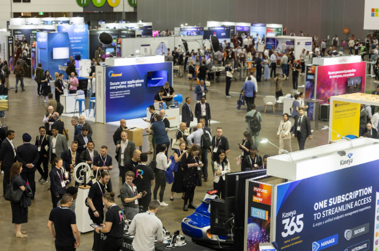
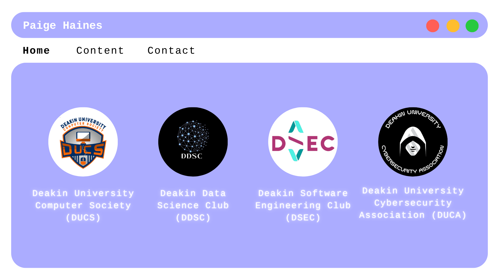
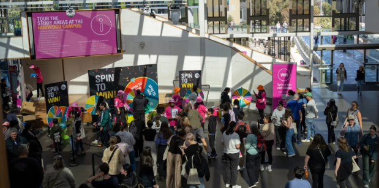

How to Turn Academic Success into Career Opportunities

June 29, 2025
It is no secret that it is difficult to get your foot in the door in the IT industry, and as a student it can become quite overwhelming to know where to start. As a second-year student who balances studies with social events and networking, I’ve picked up a wealth of knowledge about the tech industry and discovered practical methods to help you stand out when applying for roles. In this article, I demonstrate that you don’t have to undertake this journey alone, as there are plenty of pathways to build your skills and connections while you study. Read on to find out exactly how you can get started!

One of the most valuable things I’ve discovered is the benefit of attending industry conventions and conferences. Although the ticket prices may seem steep, there are many organisations that sponsor students or offer discounted entry to such events. Conventions you may be interested in include CyberCon, BSides, and AusCERT, all of which provide many opportunities to cross paths with some amazing individuals and start some great conversations. I love to think of conventions and conferences as an investment into my future, with connections that may continue to benefit you long after the conclusion of the event.
Consider joining industry communities such as the Australian Information Security Association (AISA), the Information Systems Audit and Control Association (ISACA), and Open Worldwide Application Security Project (OWASP), which are active all across Australia. I’ve learned how helpful it can be to reach out to these communities either via email or through social media for volunteering opportunities, where you can introduce yourself and show your enthusiasm for helping out. This gives you a front-row ticket to some of the greatest minds and networking opportunities, while also helping the community.

If you’re someone who thinks networking is a bit daunting, university clubs are a great place to meet like-minded students. These clubs will often host both educational and social events that can introduce you to the industry without diving in the deep end first. As a great appetiser, university clubs also help you build stronger ties to the local Deakin community and make some friends who share the same interests as you. With club memberships being super affordable (the price of a cup of coffee!), students can connect with others in a low-pressure environment.
Think beyond the classroom! I highly encourage all of my fellow students to create or contribute to projects within your specialisation. These projects show your initiative and assist in refining your skills and are a fantastic talking point with future employers. My personal preference is sharing projects on GitHub, as well as cross-sharing these projects to LinkedIn where they’re more likely to catch the attention of industry professionals and potential employers.
It’s important to keep your connections alive, as staying in touch is key to building impactful relationships. Some things I’ve found helpful include sending a follow-up message after industry events, asking to grab a coffee (either virtual or online!), and keeping connections updated on your learning journey. Relationships are built over time, so never underestimate the power of catching up and sharing stories. These small steps now can lead to exponential long-term relationships.
You don’t need to join a formal program to benefit from mentoring. Take note of professionals who are active in the industry and are often engaging in initiatives, and reach out to them. You may be surprised by how open IT professionals are to sharing knowledge. I always say to other students who come to me for advice that one conversation can truly change the trajectory of your journey, so always put yourself out there as a continuous learner.

Say yes to all kinds of opportunities, even when you’re not sure! If you think you’re perhaps unqualified for a job or opportunity, just apply anyway! Whether you are wanting to apply for scholarships like the Deakin Scholarship for Excellence, or the Deakin International Scholarship, internships, or volunteer roles, just go for it! The experience and growth you will gain from these opportunities will be valuable ten-fold. It is true that you miss all the shots you don’t take. There are plenty of opportunities including volunteering with Deakin that will make you stand out, such as Open Days, career expos, or IT workshops and other School of IT initiatives. By applying for these roles and saying yes, you show your leadership, and you open the doors to working with both faculty and industry partners.
While gaining the technical know-how in your degree can seem like enough to land a job, there are many other things you should be doing to boost your chances of landing an internship or post-graduate position. As an IT student at Deakin University, you already have access to an amazing network, so make the most of it by connecting with staff and other students both in your units of study and outside, like in university club and other events. If you start small, and set goals for yourself by staying active in the IT industry, you will feel your confidence grow which will, in turn, lead to a more lasting impression on future employers.
Remember: your future in cyber security starts now, and your dream role is more accessible than you think.